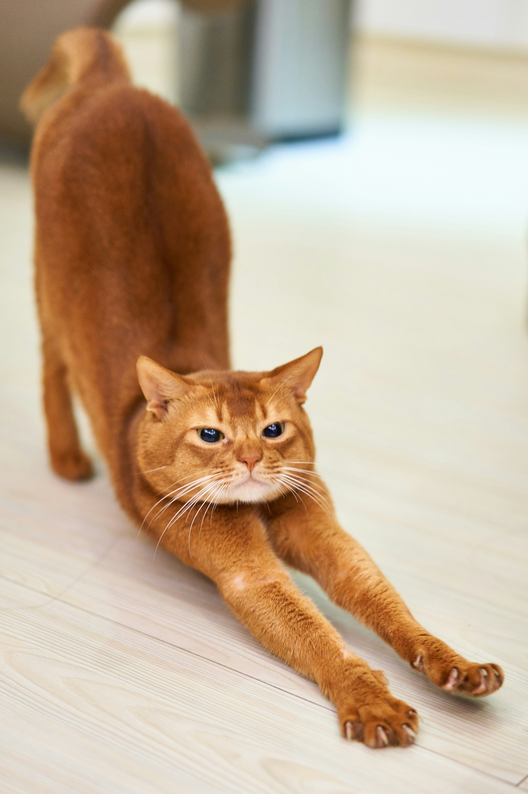
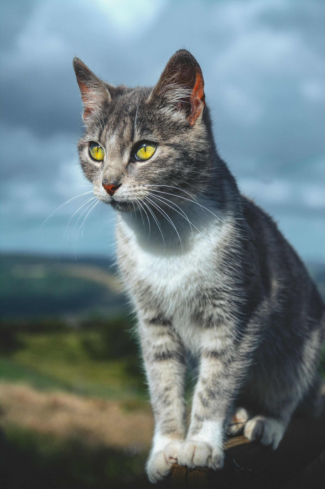
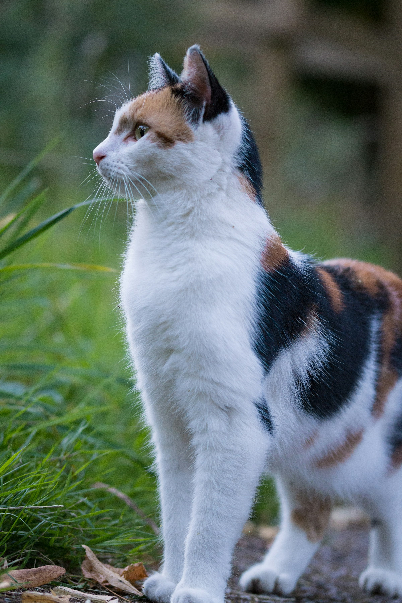

Три кота

Биба, 7 лет
Рыжий кот как рыжий кот. Любит кусать, любит поесть, не любит шум. Часто ходит
со злой мордой.

Боба, 5 лет
Спокойный серо-белый кот с приятной шёрсткой.
Любит наблюдать, любит когда его
гладят.

Буба, 3 года
Красивый цветной кот. Немного пугливый. Любит гулять на улице, любит кушать.